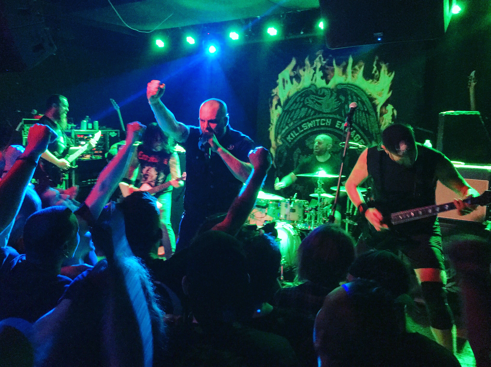

KILLSWITCH ENGAGE • 03/09 • SAINT VITUS • BROOKLYN, NY
MARCH 10, 2016

Let me start off by saying that I love Saint Vitus, and it is without a doubt my favorite venue in New York City. Once one of Greenpoint's best kept secrets, Saint Vitus has become increasingly popular over the years for booking acts capable of selling out giant venues to perform in their 350-capacity room. Seeing a show at Saint Vitus is special experience. There is a true sense of community and friendship among fans, which is convenient considering how packed the place can get. The crowd is always wild, but always respectful.
Killswitch Enage's performance at Saint Vitus was part of their five-show NYC residency celebrating the release of their new album, "Incarnate." All fives shows were booked in small venues, giving fans the opportunity to see the band perform in an intimate setting. Considering the fact this was my first time seeing Killswitch Engage, I felt very lucky to be able to enjoy such a rare event.
As soon the band took the stage, frontman Jesse Leach proclaimed that Saint Vitus was a place he frequently visited but had never played, and that he was excited to finally perform there. A chorus of cheers from fans echoed his excitement as the band launched into "This is Absolution," and the energy remained consistent and palpable throughout the entire set. Fans moshed, crowd surfed, stage dove, and even shared a bottle of whiskey that Leach passed into the crowd.
The band did not discourage rowdy behavior but rather encouraged it (under the condition that fans take care of each other, of course). Guitarist Adam Dutkiewicz challenged fans to "knock him the fuck out of tune," a feat one fan had successfully accomplished early in the set while attempting a stage dive. Jesse Leach did not limit himself to the confines of the stage and took every opportunity to join fans in the mosh pit and then crowd surf his way back to the front. The setlist offered a nice journey through the Killswitch Engage's discography, and while the CM Punk fan in me was really hoping to hear "This Fire," it did not take away from the band's incredible performance.
I don't remember the last time I've been to a show where the lines between the band and the audience were so blurred; where everyone could feel free to go wild and enjoy the music in any way they saw fit. For one hour, we were all able to free ourselves from the stresses of the outside world and share a moment with a band that was as thankful to play for the fans as the fans were to see them play.
Setlist:
This is Absolution / My Last Serenade / Numbered Days / Just Let Go / Rose of Sharyn / Loyalty / Hate by Design / You Don't Bleed for Me / Always / Rise Inside / Beyond the Flames / Strength of the Mind / In Due Time / My Curse / The End of Heartache
BLACK SABBATH • 02/25 • MADISON SQUARE GARDEN • NEW YORK, NY
FEBRUARY 26, 2016

When Black Sabbath first announced their performance at the iconic Madison Square Garden, it was supposed to be one of the final performances of their U.S. tour, and the last time they would ever play in New York City. I don't know why I always fall for the lure of the "farewell tour," but the performance has now become the first of three farewell shows in the immediate NYC area. For a band like Black Sabbath, though, saying goodbye even three times just wouldn't be enough.
Starting off their set with "Black Sabbath," the self-titled first track from their debut album of the same name, the band launched into a performance of their greatest hits, noticeably omitting songs off of their well-received 2013 release, "13." While I would have liked to have heard a track or two from that album, it seems fitting that they would focus their efforts on playing the songs that made people love the band in the first place. By the time the band returned ot the stage for an encore performance of "Paranoid," you could feel a collective crowd realization that this would be a performance not soon forgotten by anyone lucky enough to experience it.
Black Sabbath still has what it takes to put on a great show, and for a band with all of its original members in their late sixties, that is an impressive feat. If this truly Black Sabbath's final tour, they will be sorely missed. I imagine that Ozzy Osbourne still has a couple of solo tours left in him, and I look forward to catching those if he embarks on them, but nothing will touch watching the band that started it all.
Setlist:
Black Sabbath / Fairies Wear Boots / After Forever / Into the Void / Snowblind / War Pigs / Behind the Wall of Sleep / N.I.B. / Hand of Doom / Rat Salad / Iron Man / Dirty Women / Children of the Grave / Paranoid
ANIMAL COLLECTIVE • 02/23 & 02/24 • IRVING PLAZA • NEW YORK, NY
FEBRUARY 25, 2016

Fresh off the release of their new album, "Painting With," Animal Collective played two sold-out nights at Irving Plaza, a venue choice more intimate than their previous visits to New York City. This was my 7th and 8th time seeing the band, and just like each preceding tour, the shows offered a completely different stage design and setlist.
The great thing about seeing Animal Collective is that every tour offers a new experience. They are always heavy on recent material and offer only a small handful of old songs, the visual and sonic experiences are colorful and precisely parallel; sometimes Deakin is there. It is an approach that seemingly is a recipe for destruction should the band ever put out a bad record, but considering the devotion of most Animal Collective fans (myself included), I don't know if it would really make a difference.
Lucky for us, the new record is fun and translates well to a live setting. Ex-Ponytail and Slasher Flicks member Jeremy Hyman fills in for Noah Lennox (Panda Bear) on drums, allowing Lennox, Dave Portner (Avey Tare), and Brian Weitz (Geologist) to stand front and center behind their respective setups. The songs themselves were performed to near perfection, but what really blew me away were the transitions in between. Animal Collective always manages to turn their entire setlist into a single performance piece, mastering the art of going off on musical tangents while always having a place to end up, and at the perfect time.
Setlist (Night 1):
Golden Gal / Spilling Guts / Hounds of Bairro / Vertical / Daily Routine / Bees / Lying in the Grass / The Burglars / Bagels in Kiev / On Delay / Alvin Row / Recycling / Loch Raven / FloriDada
Setlist (Night 2):
Natural Selection / Gnip Gnop / Hocus Pocus / The Burglars / Jimmy Mack / Daily Routine / Golden Gal / Summing the Wretch / On Delay / Loch Raven / FloriDada / Bees / Lying in the Grass / Alvin Row